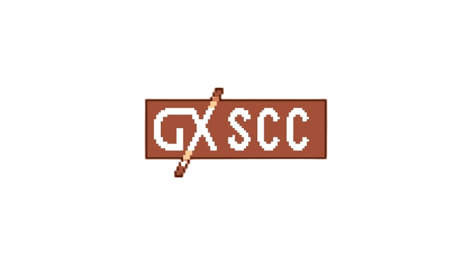
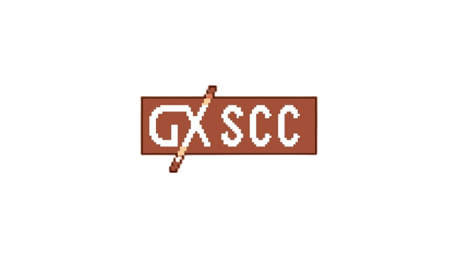

PrinceCroc est un jeu créé par Colin Ball, Fabio Sintoni, Elian Martinot et Diego Riviere--Jombart pour un projet informatique lors de notre première année de préparatoire à l'école Épita à Toulouse.
Le but du jeu est d'aider PrinceCroc le petit crocodile à retrouver ses morceaux de couronnes éparpillés dans trois endroits différents, le premier étant un village médiéval,
le deuxième une forêt sombre et enfin il trouvera son dernier morceau de couronne dans une montagne enneigée.
Une fois sa couronne rassemblée, il ne lui manquera plus qu'à retourner chez lui
en passant par le dernier endroit, le volcan.
Logiciels utilisés :


 
